wildcard is an experimental skill for claude code that, at random, introduces an unrelated expert to your current task or project. in doing so, the token pool is seeded with unorthodox directions for standard chain-of-thought systems to work with - influencing more creative thinking, problem-solving, and idea generation in large language models.
this project is an experiment in introducing and emulating non-linear creative thinking in artificial intelligence systems, without straying away from current artificial intelligence technology and capabilities.
wildcard
installdrawing wildcards